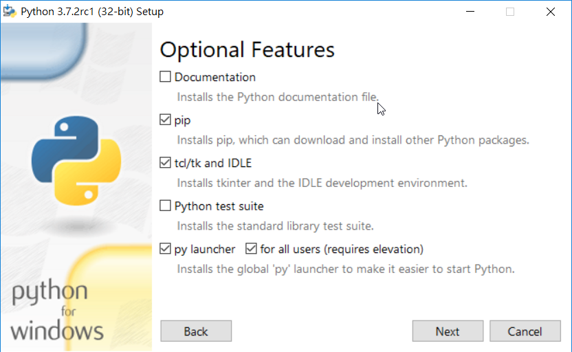
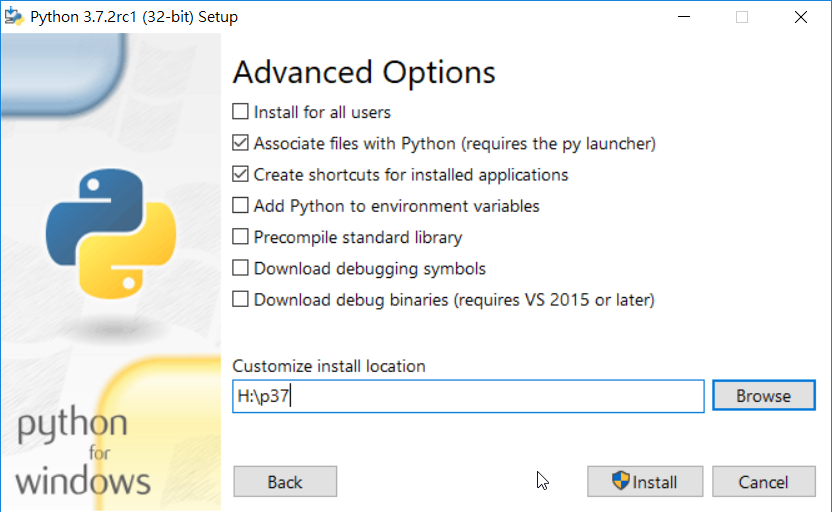
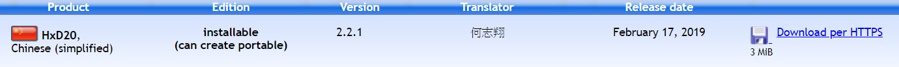
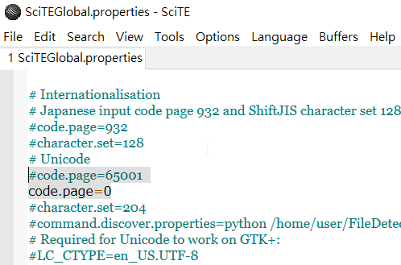
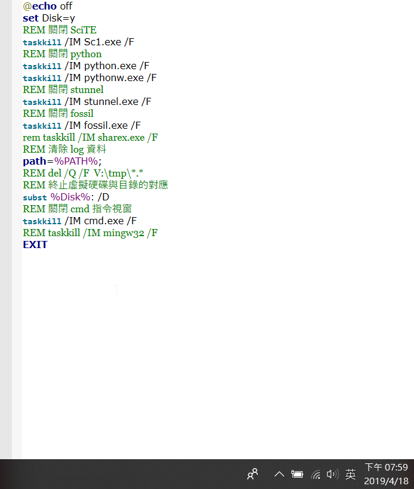

20190222 week1
40623201
這周是這學期第一次上課，為了補228連假的課而一次上8節課，真的有點吃不消，這周學習到怎麼建立個人可攜倉儲，以前只是用老師幫我們建立好的，所以不知道建立可攜倉儲的步驟那麼的繁瑣，要先下載 Python3.7.2、 HxD(二位元編輯器) 、 SciTE(編譯器) 、KDiff(用來比較差異性的) 、 TCC(C編譯器)等工具，還要更改start.bat 及 stop.bat，最後才能夠完成建立可攜倉儲，過程中在更改pip路徑時，不小心動到二位元資料，而導致路徑錯誤，最後複製其他還沒更改的，重新更改過就成功了。
我將操作步驟整理在 Course content 內的 week1。
40623204
這學期第一週，上課學系建立可攜式倉儲，之前都是老師建立好讓大家下載，今天自己親自做一次，才知道有很多繁瑣的步驟，也會遇到很多問題。收先要先下在 python3.7.2 、 hxd 、 scite、 kdiff 、 tcc ，並利用舊的可攜式倉儲的 start.bat 和 stop.bat 更改內容，這樣才能建立一個可攜式倉儲，過程中我遇到很多問，但都有一一解決，也從中學到很多之前不會的東西。
40623217
心得:
這星期為了配合228連假的補課，所以從下午1:20一連貫的上到晚上9:50，雖然這途中有休息，但還是覺得非常的累，這周要做出一個自製的可攜Python系統，這東西除了要到官方的python3.7.2下載外，還得載下SciTe editor的編譯器，為的是能夠在裡面寫下開啟python系統的編譯程式碼，除此之外要再下載一個hxd二維編譯碼，為了要讓執行時可在自己要求的home裡頭執行，最後最重要的是必須了解之前python系統的start、stop批次檔的內容寫的是什麼，光是最後一個就是很煩躁的東西，因為只要弄錯，可能就無法開啟，或是開完後無法關閉，這天光是處理這個就很燒腦了，且還得用global檢查code是否是自己要的，做完後的我只感覺到稍微放鬆，畢竟一件東西最可怕的不是它有多難，而是如何去摸索並得知裏頭的涵義，就算了解了也不會覺得開心，而是一種奇怪的滿足感罷了。
簡易製作過程如下:
1.下載python3.7.2。




2.下載HxD二維編輯器。



3.修改home的位置，查到p37進行修改。

4.修改為y:\p37\python.exe 。

5.下載SciTe編輯器。

6.到選項的Global options file裡更改。

7.用快捷ctrl+f ，打上code.page。

8.將65001的部分設定為開啟，將code.page=0的前方打上#即可關閉。

9.將突下反白的部分新增上去即可，完成我們所需要的start.bat的批次檔。

10.圖下為stop.bat的批次檔。

40623223
才剛開學第一周就要連上8堂課，不管是在肉體還是精神都受到折磨，但是為了放假這都是必要的過程，想到這裡原本已經快要消失的意識又被拉了回來，說起來建個隨身系統真是麻煩，弄到一半心思都飄到下禮拜去了，先是下載下來然後改裡面的目錄，然後再砍掉.....重複，還有一些執行檔的程式設定，看到一半就放棄理解直接去複製以前的來改，我只能說，從頭開始真是不容易......最後還是直接下載老師上傳的檔案。
補充一下，雖然有直接抓用好的檔案，但隨身系統什麼的我還是有做完的拉，有沒有作對就不知道就是了
40623229
第一週直接八節課，從原本的下午一路上到傍晚再從傍晚上到晚上，原本老師還問大家要不要在上第三個禮拜的課，可以再多放一個禮拜，當然是要阿，只可惜最後只上道了10點，主要學習如何自己動手做start以及stop然後了解是如何啟動的，這些東西如果只是看過的話日後一定沒有印象，但是如果自己動手試試看的話會在更了解一點
40623232
這學期第一週，上課學系建立可攜式倉儲，之前都是老師建立好讓大家下載，今天自己親自做一次，才知道有很多繁瑣的步驟，也會遇到很多問題。首先要先下在 python3.7.2 、 hxd 、 scite、 kdiff 、 tcc ，並利用舊的可攜式倉儲的 start.bat 和 stop.bat 更改內容，這樣才能建立一個可攜式倉儲，過程中我遇到很多問題，但都有一一的解決，也從中學到很多之前不會的東西，一門學問不能不求甚解，不懂就問，但也不要一開始就問，試著思考問題，才是可以嚷自己成長的推手。
40623242
這週是這學期第一次上課，為了補228連假的課一次上好上滿8節課，真的有點硬，這周學習到怎麼建立個人可攜倉儲，以前只是用老師幫我們建立好的，所以不知道建立，這次由我自己開始從零到可執行，原來可攜倉儲的步驟那麼的繁瑣，要先下載 Python3.7.2、 HxD(二位元編輯器) 、 SciTE(編譯器) 、KDiff(用來比較差異性的) 、 TCC(C編譯器)等工具，還要更改start.bat 、start_cadlab.bat及 stop.bat，最後才能夠完成建立可攜倉儲，過程中遇到的問題一為在更改pip路徑時，不小心動到二位元資料，而導致路徑錯誤，最後複製其他還沒更改的，重新更改過就成功了，問題二為一直無法認證資料，原本的資料認證位老師的，沒把資料改為自己的，所以怎樣打自己的帳密都無法順利認證登入。
我和組長遇到的問題整理在Q&A還有操作步驟整理在 Course content 內的 week1
40623243
第一周上課，因為遇到連假要補課，一次從中午開始上課到晚上共八節課，講了許多關於協同及模擬相關內容，及本學期主要目標。還有以前都不用動手做但是這次自己改的start.bat，首先要先上網站下載許多個別的東西，然後經由scite去做更改，中途也是遇到許多問題，也是經由同學幫忙才得以解決。
40623244
剛開學，而且下週放一次假，又不想在找時間補課，於是乎我一連上了八堂課，中間休了一小時去吃飯，雖然累，不過這八堂課，只有前幾節老師帶著我們操作如何建立自己的可攜系統，之後的時間讓我們自己看著老師的影片操作，建立自己的可攜系統雖然方便，但系統內的軟體時常改版更新，過了一段時間，需要在自己調整自己的可攜系統。
40623248
40423220
這周是這學期第一個禮拜上課，老師突然說因228連假補課而連上8節課，我的心好累!
這周的學習目標是如何建立可攜程式系統，因為是重修生，好久沒有接觸到python的課程，看到那些步驟頭很大。
要先下載 Python3.7.2、 HxD(二位元編輯器) 、 SciTE(編譯器) 、KDiff(用來比較差異性的) 、 TCC(C編譯器)等工具，還要更改start.bat 及 stop.bat，最後才能夠完成建立可攜倉儲。
好在經過請教同學之後，問題都有一一解決。
Experience << Previous Next >> 20190301 week2